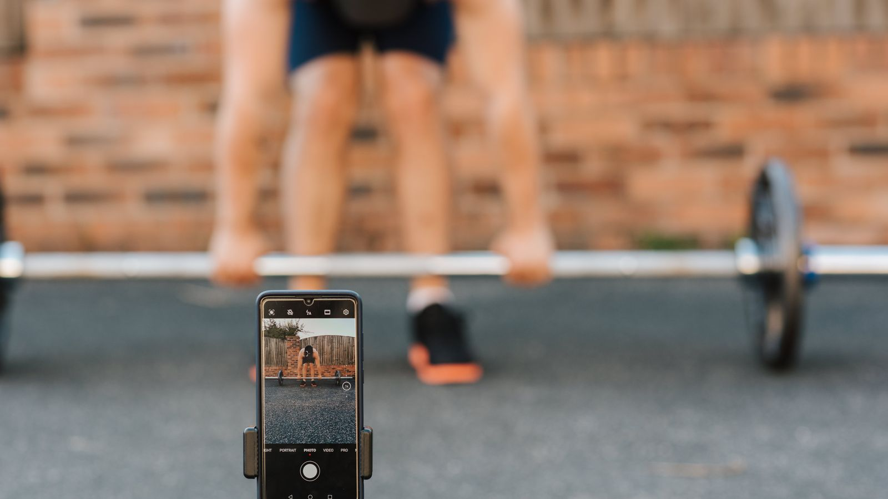

AI 动作检查到底准不准？研究给出数字
你把手机架好，做完一组，app 回答："膝内扣，深度 92°"。这看起来像一次测量。2026 年这样的 app 出了几十个，而搜索"AI 动作检查"得到的几乎只有应用商店页面。问题在于，屏幕上那些度数有一个实验室里测出来的误差范围，没人把它写在旁边。

要点速览
- 最好的 2D 估计器测膝关节角度平均差 9.3°。 这是在 220 万帧、11 个开源模型中最理想的结果：受测模型没有一个达到临床解读所需的精度。
- app 里的"3D"常常比 2D 更差。 关节位置误差从 2D 的 72-122 毫米升到 146-249 毫米，因为模型还要猜深度。
- 拍摄角度比算法更重要。 动作完全落在画面平面内时，肘关节误差为 10.5°；偏离这个平面，精度显著下降。
- 人眼同样不是量角器。 六位资深临床医生看同一批视频，彼此之间的加权 kappa 只有 0.30-0.34，而每个人与自己前后一致为 0.55-0.85。
- 视频有用，但适合另一类问题。 二选一的判断和整体评价是可靠的，小数点后的角度不可靠。该问"膝盖有没有越过鞋的内缘"，而不是"我内扣了几度"。
AI 动作检查 app 到底在做什么
几乎所有产品背后都是同一项技术：姿态估计。神经网络看着画面，猜测肩、髋、膝、踝在哪里，再由这些点算出角度。它并没有测量你的身体，而是从像素推断关节中心的位置。
这个区别很重要。实验室里，关节位置来自反光标记点和多台标定过的摄像机；这里只有一台摄像机，再加上衣物、健身房的灯光，以及一根时不时挡住你的杠铃。
最大规模评测的数字
2025 年 11 月，苏黎世联邦理工学院的团队在 Scientific Reports 上发表了迄今最广泛的比较：25 名受试者、220 万帧以上的运动画面、11 个开源姿态估计器，测试了 18 个 2D 变体和 26 个 3D 变体，全部与基于标记点的光学系统对照。
| 指标 | 2D 估计器 | 3D 估计器 |
|---|---|---|
| 关节位置平均误差 | 72-122 毫米 | 146-249 毫米 |
| 膝关节角度平均误差 | 从 9.3° 起 | 从 14.1° 起 |
| 肘关节角度平均误差 | 从 21.5° 起 | 从 16.3° 起 |
Nurvan 表格，数据取自 Rode et al., 2025（Scientific Reports）。"从…起"表示该类别中表现最好的模型。
两点实用解读。第一：即使最好的情况，膝关节平均误差也在九度左右，作者明确写道，受测模型没有一个低于正确临床解读所需的角度误差。第二：加上第三个维度反而更糟。当模型要用一台摄像机同时猜测深度时，位置误差翻倍。应用说明里的"3D"不是质量保证。
同一团队又针对肘关节做了一次测试：当动作完全发生在画面平面内（理想条件）时，平均误差为 10.5°，均方根误差 14.7°，而佩戴式惯性传感器为 4.2° 和 6.0°。相对摄像机的朝向显著影响精度，并且模型倾向于低估较大的屈曲角度——恰恰是你想知道自己是否蹲够深的那一段。
拍摄角度不是小事
2025 年 Journal of Biomechanics 的一项研究测试了 OpenCap，这是研究中最常用的智能手机无标记系统，对象是 53 名膝骨关节炎患者和 30 名健康对照。朝向摄像机行走时，平均误差为 6.1°，一致性 0.67；反方向行走时，误差出现统计学上的显著恶化。同一个人、同一套软件、同一个房间，变的只是朝向。
手工 2D 分析同样如此。在身体活跃的女性中，额状面膝内扣角度的有效性取决于深蹲深度、支撑腿是哪一条，以及内扣是否明显。换句话说：同一个测量在一种条件下有效，在另一种条件下未必。
那么人类教练更好吗
要看你问他什么。在一项针对 72 名成人的意大利研究中，六位资深临床医生用一套经过验证的量表，在三个不同时间点评分同一批单腿深蹲视频。每个人与自己相当一致——加权 kappa 0.55 到 0.85——但评分者之间的一致性只有 0.30 到 0.34，按惯例属于"一般"。
六位专家、同一段视频，判断却难以对齐。这不是在指责这个行业：用肉眼评判角度和体段本来就是这样。它也解释了为什么两位教练会对同一次硬拉给出两种不同的纠正，而两人都不算外行。
有用的部分紧随其后。当要求给出整体判断、而不是逐段打分时，一致性会提高：在有膝关节旧伤的人群中，三位资深和三位新手评分者用整体法达到了良好一致。而选得好的二元判断经得起与实验室的对照：在青少年运动员中，"膝盖最终落在鞋的内缘以内"这一判断，在识别 3D 测得的内扣时曲线下面积最高达 0.93，远高于其他判断条目。
视频是回答是非题的好工具，却是糟糕的量角器。
研究实际上怎么说
"app 像实验室一样测你的角度"
Rode et al., 2025 — 11 个受测估计器没有一个达到临床解读所需的角度误差
"标 3D 就更准"
Rode et al., 2025 — 2D 位置误差 72-122 毫米，单摄像机 3D 为 146-249 毫米
"拍到就行，角度是小事"
Rode et al., 2025；Wang et al., 2025 — 相对摄像机的朝向显著改变误差
"人类教练是客观的"
Gianola et al., 2017 — 六位专家看同一批视频，相互一致性仅 0.30-0.34 加权 kappa
"视频动作检查毫无用处"
Edwards 与 Liberatore, 2018；Erdman et al., 2024 — 整体判断可靠，二元判断 AUC 最高 0.93
"app 能告诉你这个动作对你是否安全"
现有研究没有在力量训练人群中检验过损伤预测
怎么用
- 在动作所在的平面拍摄。 摄像机与髋同高，垂直于你关心的平面：侧面看深度和背部，正面看膝盖。整个动作从第一帧到最后一帧都要在画面里。
- 摄像机固定，位置始终一致。 只有画面一致，两次训练的对比才有意义。地上做个记号比任何算法都管用。
- 提二选一的问题。 "膝盖有没有越过鞋的内缘？""髋有没有低于膝？""杠铃有没有离开身体？"这些问题上，无论人眼还是算法都可靠。
- 忽略小数点。 app 写 92.4° 屈曲，就读成"大约 90 度，上下十度"。一个角度一周之间变化 5°，那是噪声，不是进步。
- 视频看动作，数字看负荷。 你到底推得有多狠，单帧画面看不出来。它在重量、次数和 RIR 的历史记录里——这个估计同样有它的局限。
- 疼痛、肿胀或关节打软，不是靠 app 解决的技术问题。 那需要医疗专业人员，而不是更好的取景。
如果你在远程带学员
两条规则，能把视频变成数据而不是意见：
- 始终要求同样的取景。 高度、方位、距离说明一次，之后坚持执行。否则你比较的是不同的拍摄，而不是不同的执行。
- 看之前先写下判断标准。 每个动作三个二选一的问题，提前定好。这是最简单的办法，避免今天的判断和上周二对不上——这种事连资深评分者也会遇到。
Nurvan：视频看形状，历史看负荷
在 Nurvan 里，教练能看到每一组的重量、次数和 RIR，动作的历史记录排成一行：这是单帧画面给不了的数据，也是判断训练要求是否真的在上升的依据。视频仍然是它本来的角色——形状检查；训练安排的决定由数字来做。
常见问题
AI 动作检查 app 有用吗？
用来提示明显偏差有用，用来测量没用。在迄今最大规模的评测中，膝关节角度平均误差最好的 2D 模型为 9.3° 起，3D 模型为 14.1° 起，没有一个达到临床解读所需的精度。如果 app 说某侧膝盖明显往内塌，它多半是对的；如果它给你一个带小数的数字，那个数字不可信。
深蹲该从哪一侧拍？
从你想看的事情发生的那一侧。侧面、摄像机与髋同高，看深度、杠铃轨迹和躯干前倾；正面看膝盖的走向。研究中相对摄像机的朝向会显著改变误差，所以斜四十五度拍摄是最快得到无意义数字的方法。
手机还是佩戴式传感器？
测角度选惯性传感器：在肘关节的直接比较中，它是 4.2° 平均误差，而视频估计在最佳条件下是 10.5°。要观察一个完整动作，视频仍然更方便、信息更多。
app 能告诉我动作是不是危险吗？
不能。现有研究测量的是系统描述动作时与实验室的接近程度，而不是这个动作会不会造成损伤。如果你有疼痛、不稳或突然打软，这是医学问题，应该问医生或物理治疗师。
延伸阅读
- 线上教练真的有用吗？研究怎么说 — 远程教练必须盯住什么，才能顶得上现场带练。
- 你的 RIR 估得准吗？研究怎么说 — 支撑着半套训练的另一个估计值。
- AI 健身计划：研究到底怎么说 — 人工智能在哪里站得住，在哪里站不住。
参考文献
- Rode D, Dunkel A, Willi R, Wolf P, Xiloyannis M, Riener R, 2025. Assessment of monocular human pose estimation models for clinical movement analysis. Scientific Reports 15(1):38767. PMID 41193590 · DOI 10.1038/s41598-025-22626-7
- Rode D, Ceccarelli A, Esser A, Wolf P, Riener R, 2025. Accuracy of IMUs and Monocular Human Pose Estimation at Measuring Elbow Flexion. IEEE Int Conf Rehabil Robot 2025:773-778. PMID 40644081 · DOI 10.1109/ICORR66766.2025.11063086
- Wang J, Xu W, Wu Z, Zhang H, Wang B, Zhou Z, Wang C, Li K, Nie Y, 2025. Evaluation of a smartphone-based markerless system to measure lower-limb kinematics in patients with knee osteoarthritis. Journal of Biomechanics 181:112529. PMID 39862716 · DOI 10.1016/j.jbiomech.2025.112529
- Wade L, Needham L, McGuigan P, Bilzon J, 2022. Applications and limitations of current markerless motion capture methods for clinical gait biomechanics. PeerJ 10:e12995. PMID 35237469 · DOI 10.7717/peerj.12995
- Gianola S, Castellini G, Stucovitz E, Nardo A, Banfi G, 2017. Single leg squat performance in physically and non-physically active individuals: a cross-sectional study. BMC Musculoskeletal Disorders 18(1):299. PMID 28709418 · DOI 10.1186/s12891-017-1660-8
- Edwards S, Liberatore M, 2018. Reliability of a Squat Movement Competency Screen in Individuals With a Previous Knee Injury. Journal of Sport Rehabilitation 27(2). PMID 28872403 · DOI 10.1123/jsr.2017-0064
- Erdman A, Loewen A, Dressing M, Wyatt C, Oliver G, Butler L, Sugimoto D, Black AM, Tulchin-Francis K, Bazett-Jones DM, Janosky J, Ulman S, 2024. A 2D video-based assessment is associated with 3D biomechanical contributors to dynamic knee valgus in the coronal plane. Frontiers in Sports and Active Living 6:1352286. PMID 38558858 · DOI 10.3389/fspor.2024.1352286
- Jamaludin NI, Sahabuddin FNA, Rasudin NS, Shaharudin S, 2022. The Concurrent Validity and Reliability of Single Leg Squat Among Physically Active Females with and without Dynamic Knee Valgus. International Journal of Sports Physical Therapy 17(4):574-584. PMID 35693857 · DOI 10.26603/001c.35706
选题依据 2026 年 11 月的趋势信号：2026 年各大应用商店上线了数十款"AI 动作检查"应用，而搜索结果首页几乎全是产品页，没有一个精度数字。科学文献通过 PubMed 检索。
Giammaria Loi 是 Nurvan 的创始人。他自 2012 年开始力量训练，2013 年起担任私人教练和 FIPE 认证教练，2018 年起在国家级力量举赛事中参赛。他署名的每篇文章都从研究出发，落到健身房里真正有效的做法。作者页面
注：本文为科普内容，不能替代医生或专业人士的意见。